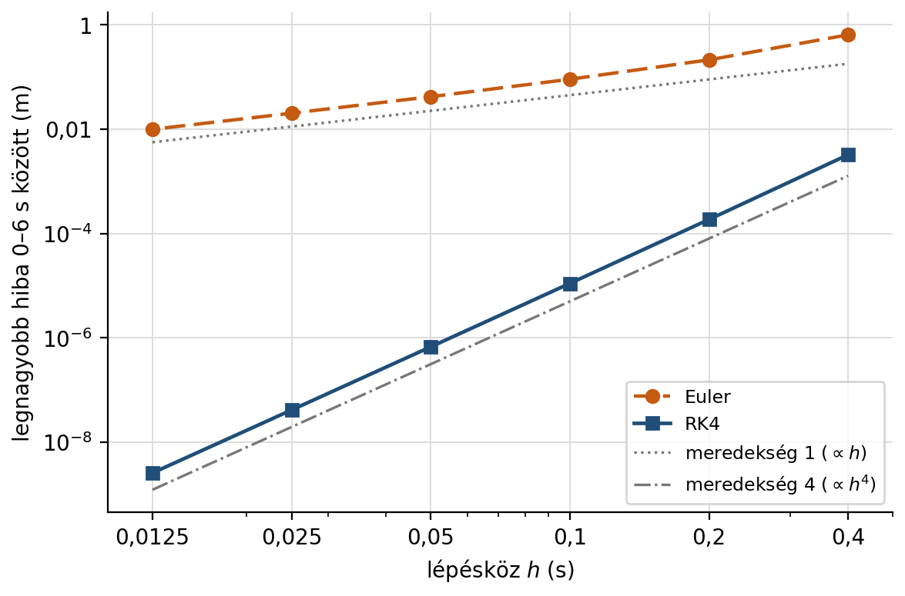
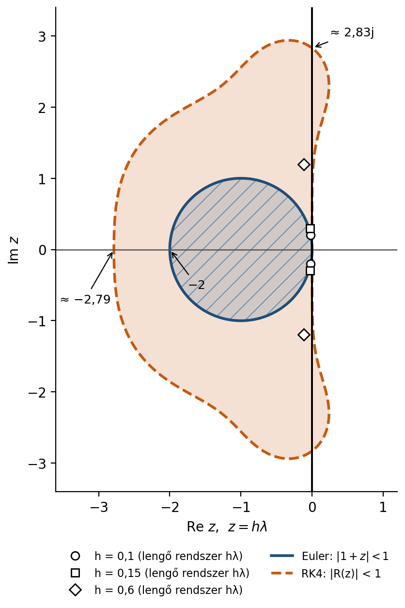
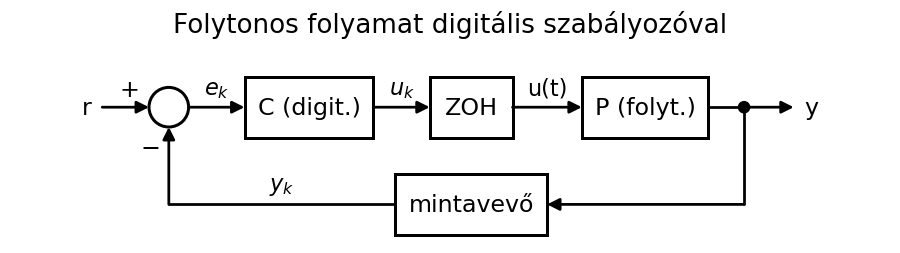
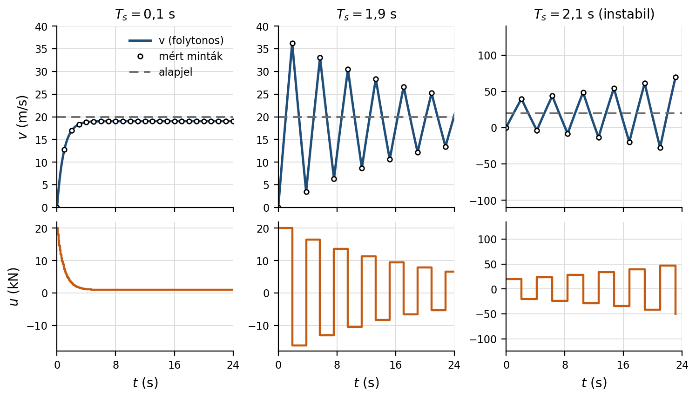

A Lineáris differenciálegyenletek és a karakterisztikus egyenlet alfejezet rugós rendszerét papíron megoldottuk. A fordított inga viszont nemlineáris, a motor beavatkozó feszültsége telítődik, a digitális szabályozó pedig csak néhány milliszekundumonként számol új értéket. Ilyenkor a választ numerikusan, lépésről lépésre számoljuk ki.
A gépi eredmény azonban nem automatikusan igaz. Egy túl nagy lépésközzel egy stabil rendszer a képernyőn felrobbanhat, egy rövid zavarimpulzust a megoldó észre sem vehet, és egy hibásan felépített szimuláció „jó” szabályozót mutathat ott, ahol a valódi kör lengene. Ebben az alfejezetben megtanuljuk, hogyan számol a gép, mikor téved, és hogyan építjük fel helyesen a szabályozott kör szimulációját.
Az egyenlet minden pontban megmondja, milyen meredeken halad a megoldás. A legegyszerűbb ötlet: induljunk a kezdőértékből, olvassuk le a meredekséget, lépjünk egyenesen ideig, és ismételjük. Ez az Euler-módszer. Az RK4 (negyedrendű Runge–Kutta) egy lépésen belül négyszer is megkérdezi a meredekséget, és a súlyozott átlaggal lép.
Tippeld meg: egy csillapodó lengő rendszert 0,15 s-os lépéssel szimulálunk, a periódusidő kb. 3,2 s, tehát egy periódusra 21 pont jut. Elég ez az Euler-módszernek?
A (d) panel a válasz: nem. A pontos megoldás csillapodik, az Euler-megoldás viszont nő. A (b) panel pedig figyelmeztet: kisebb lépésnél az Euler-görbe már nem robban fel, de még mindig messze jár a valóságtól.
A megoldók elsőrendű rendszereket várnak: , ahol egy vektor. Egy -edrendű egyenletet úgy alakítunk át, hogy új változónak vesszük a függvényt és az első deriváltját. A rugónál , :
Mátrixalakban, :
A mátrix sajátértékeire : éppen a karakterisztikus gyökök. A numerikus módszerek viselkedése is ezeken múlik.
Továbbvitt eredmény. Az -edrendű egyenlet az állapotvektorral elsőrendű egyenlet. Ez az állapotváltozós alak kezdete, amelyet az Állapotváltozós alak és a futó példák modelljei és Az állapottér-modell és a realizációk alfejezet bont ki.
Euler-módszer. A rácspontok , a közelítés :
A Taylor-sor szerint ; az Euler-lépés a -es tagtól elhagy mindent. Az egy lépésben elkövetett lokális hiba tehát -tel arányos. Egy rögzített időig lépés kell, a hibák összegződnek: a globális hiba -val arányos. A módszer elsőrendű.
RK4. Egy lépés négy meredekség:
A a kezdőpontbeli, a és két felezőponti, a a végpontbeli becslés. Az együtthatók úgy vannak megválasztva, hogy a lépés a Taylor-sorral -ig egyezzen: a globális hiba -tel arányos. A bizonyítást elhagyjuk, a numerikus módszerek elméletét a gyűjtemény numerikus számításokról szóló könyve (advanced-books/adv-numerical-computing) tárgyalja.

Kétlogaritmikus ábrán a rend a görbe meredeksége. A lépésköz felezése az Euler hibáját a felére, az RK4-ét tizenhatod részére csökkenti. Az RK4 négy függvényhívást kér lépésenként, de ugyanahhoz a pontossághoz sokkal kevesebb lépés elég.
A pontosságnál előbb való kérdés: nem nő-e a közelítés ott, ahol a valódi megoldás lecseng? Vizsgáljuk az tesztegyenletet komplex -val ( esetén a pontos megoldás eltűnik). Ez azért elég, mert egy lineáris rendszer a módusaira bontva ilyen egyenletekre esik szét, a sajátértékeivel egyenlő (ezt a Sajátmódusok, koordináta-transzformáció és stabilitás alfejezet mutatja meg). Legyen .
Euler: . RK4: a négy meredekséget behelyettesítve
az Taylor-sorának első öt tagja.
Tétel. A numerikus megoldás pontosan akkor tart nullához, ha a lépésenkénti szorzó abszolút értéke kisebb 1-nél: Euler esetén , RK4 esetén .

Az Euler tartománya a középpontú egységkör: valós negatív -nál . Az RK4-é nagyobb: a valós tengelyen kb. -ig, a képzetes tengelyen -ig nyúlik. Komplex esetén az Euler feltétele
A lengő rendszerünknél () , , tehát s. Ezért nőtt a s-os Euler-szimuláció. A gyengén csillapított rendszer az Euler-módszer ellensége; csillapítatlan esetben () semmilyen nem jó.
Továbbvitt eredmény. Az Euler-módszer csak akkor stabil, ha minden a körben van. Ugyanez a feltétel tér vissza a Diszkretizálási módszerek alfejezetben, amikor egy folytonos szabályozót Euler-képlettel digitalizálunk.
solve_ivp és a merevségA scipy.integrate.solve_ivp nem rögzített lépéssel
dolgozik. Az alapértelmezett RK45 módszer minden
lépésben két különböző rendű közelítést készít; a különbségük a hiba
becslése. Ha a becslés nagyobb a tűrésnél, kisebb lépéssel próbálja
újra, ha jóval kisebb, nagyobbat lép. A tűrés komponensenként kb.
atol + rtol*|x|; az alapértékek rtol=1e-3,
atol=1e-6 ([S-SCIPY]). Szabályozástechnikai ábrákhoz ez
gyakran durva, rtol=1e-6 biztonságosabb. A
t_eval csak azt adja meg, hol kérünk eredményt; a lépésközt
nem szabja meg.
Szakaszonként állandó bemenet. Az adaptív megoldó feltételezi, hogy sima. Egy ugrásnál a lépés apróra szűkül, egy rövid impulzust pedig egyszerűen átugorhat, ha éppen egyik kiértékelési pont sem esik bele. A helyes eljárás: a szimulációt a váltási időpontoknál szakaszokra bontjuk, és minden szakaszt külön, állandó bemenettel oldunk meg, az előző szakasz végállapotából indulva.
Merevség (stiffness). Ha a rendszerben nagyon eltérő
sebességű módusok vannak (például
és
),
a pontosság a lassú módus szerint nagy lépést engedne, a
stabilitás viszont a gyors módus miatt kicsit követel
(),
akkor is, amikor az már rég eltűnt. Az explicit módszerek (Euler, RK4,
RK45) ilyenkor rengeteg lépést tesznek. Az implicit
módszerek stabilitási tartománya a bal félsík egészét
(Radau) vagy nagy részét (BDF) lefedi, ezért
nagy lépést tehetnek; az LSODA maga vált a két család
között. Tünet: a solve_ivp nagyon lassú, és az
nfev (a függvényhívások száma) aránytalanul nagy.
A valódi digitális szabályozó mintavételi időnként olvassa a kimenetet, kiszámolja az új beavatkozást, és azt a következő mintáig tartja (nulladrendű tartó, zero-order hold, ZOH). A folyamat közben folytonosan mozog.

A szimuláció algoritmusa egy mintavételi ciklusban: (1) mérés
;
(2)
kiszámítása – pontosan egyszer; (3) a folyamat
integrálása
fölött állandó
-val,
finomabb
lépésekkel. Ezt végzi a controlkit.sim.simulate_loop
(alapból
RK4-lépés mintavételenként).
Két külön időlépés van: a a szimuláció pontosságát befolyásolja, a a vizsgált rendszer része. A tempomaton jól látszik a különbség ( kg, N·s/m, , ). Folytonos arányos szabályozással ez az elsőrendű kör bármilyen -ra stabil. Mintavételezve: állandó mellett a tempomat egyenlete egy mintavételre pontosan megoldható:
A szabályozót behelyettesítve, :

A s-os kör még stabil, de használhatatlan: a beavatkozás ±20 kN között ugrál (egy valódi autó ezt nem tudná, a modellben nincs telítés). 2,1 s-nál a kör instabil.
Továbbvitt eredmény. A szimulációs minta: folytonos
folyamat (finom lépésű integrálás) + mintavételenként egyszer hívott
szabályozó, ZOH-beavatkozással
(controlkit.sim.simulate_loop). Ezt használja az Integrátortelítés és antiwindup, a Mintavételezés, átlapolódás és a nulladrendű
tartó, a Digitális PID-algoritmus és az 1. záróprojekt: DC-motor pozíciószabályozása
alfejezet.
Egy numerikus eredményt ugyanúgy ellenőrizni kell, mint egy kézi számolást. Négy egyszerű, egymást kiegészítő próba:
controlkit.sim tesztjei is így készültek.Szabályozott körnél a negyedik pont a beavatkozó jelre is vonatkozik: mindig rajzold ki -t, mert a kimenet még elfogadhatónak látszhat, miközben a beavatkozás már a hardver határain túl jár („a beavatkozó jel is eredmény”).
Legyen , , s. A pontos érték .
Euler: . Hiba: .
RK4: - ; - ; - ; - ; - .
Az RK4 hibája , kb. 440-szer kisebb. Ellenőrzés a szorzóval: , .
Stabilitási határok: Euler: s; RK4: s.
A tempomat határa: . A kritikus oldal az alsó: , azaz , tehát s.
A controlkit.sim egy lépését és teljes szimulációt is
végez. Először a kézi példa:
import numpy as np
from controlkit import sim
f = lambda t, x, u: -2 * x
for step in (sim.euler_step, sim.rk4_step):
x1 = step(f, 0.0, np.array([1.0]), 0.0, 0.25)[0]
print(f"{step.__name__:11s} x1 = {x1:.6f}, hiba = {abs(x1 - np.exp(-0.5)):.6f}")euler_step x1 = 0.500000, hiba = 0.106531
rk4_step x1 = 0.606771, hiba = 0.000240A rend mérése a rugós rendszer (, , , ) pontos megoldásához képest:
w = np.sqrt(3)
exact = lambda t: 1 - np.exp(-t) * (np.cos(w * t) + np.sin(w * t) / w)
spring = lambda t, x, u: np.array([x[1], u - 2 * x[1] - 4 * x[0]])
prev = {}
for h in (0.2, 0.1, 0.05):
t = np.arange(round(6 / h) + 1) * h
row = f"h = {h:4.2f} s:"
for method in ("euler", "rk4"):
X = sim.simulate(spring, [0, 0], t, u=4.0, method=method)
err = np.max(np.abs(X[:, 0] - exact(t)))
ratio = f" (arány {prev[method] / err:4.1f})" if method in prev else ""
row += f" {method}: {err:.1e}{ratio}"
prev[method] = err
print(row)h = 0.20 s: euler: 2.1e-01 rk4: 1.9e-04
h = 0.10 s: euler: 9.1e-02 (arány 2.4) rk4: 1.1e-05 (arány 16.9)
h = 0.05 s: euler: 4.2e-02 (arány 2.2) rk4: 6.7e-07 (arány 16.5)Most a rövid impulzus: egy elsőrendű rendszer () a s közötti 10 egységnyi lökést kapja. A pontos csúcs .
from scipy.integrate import solve_ivp
pulse = lambda t: 10.0 if 6 <= t < 6.1 else 0.0
naive = solve_ivp(lambda t, x: [-x[0] + pulse(t)], (0, 20), [0.0])
print(f"egyben: csúcs = {naive.y.max():.4f}, {naive.t.size - 1} lépés")
x, peak = np.array([0.0]), 0.0
for a, b, u in [(0, 6, 0.0), (6, 6.1, 10.0), (6.1, 20, 0.0)]:
sol = solve_ivp(lambda t, x: -x + u, (a, b), x, rtol=1e-8, atol=1e-10)
x, peak = sol.y[:, -1], max(peak, sol.y.max())
print(f"szakaszokkal: csúcs = {peak:.4f}, pontos: {10 * (1 - np.exp(-0.1)):.4f}")egyben: csúcs = 0.0000, 9 lépés
szakaszokkal: csúcs = 0.9516, pontos: 0.9516Az egyben futtatott megoldó teljesen elnézte az impulzust: kilenc nagy lépéssel jutott a végére.
A merevséghez a DC-motor elektromos időállandóját rövidítjük le: H helyett mH (módosított motor, nem a CTMS-érték). A futtatás SciPy 1.16-tal készült; a hívásszámok verziónként kissé eltérhetnek.
from controlkit import models
for La in (0.5, 0.001):
A, B, _, _ = models.DCMotor(La=La).ss()
A, b = A[1:, 1:], B[1:, 0] # állapot: [omega, i]
print(f"La = {La}: sajátértékek {np.round(np.linalg.eigvals(A).real, 1)}")
for method in ("RK45", "Radau", "LSODA"):
sol = solve_ivp(lambda t, x: A @ x + b, (0, 2), [0, 0], method=method,
rtol=1e-6, atol=1e-9)
print(f" {method:5s} nfev = {sol.nfev:5d}, omega(2 s) = {sol.y[0, -1]:.6f}")La = 0.5: sajátértékek [-10. -2.]
RK45 nfev = 182, omega(2 s) = 0.097623
Radau nfev = 410, omega(2 s) = 0.097623
LSODA nfev = 142, omega(2 s) = 0.097623
La = 0.001: sajátértékek [ -10. -1000.]
RK45 nfev = 4346, omega(2 s) = 0.099900
Radau nfev = 630, omega(2 s) = 0.099900
LSODA nfev = 300, omega(2 s) = 0.099900Végül a mintavételezett tempomat, m/s:
car = models.Cruise()
Kp, r = 1000.0, 20.0
for Ts in (0.1, 1.0, 1.9, 2.1):
T, X, V, U = sim.simulate_loop(car.rhs, [0.0], lambda k, t, v: Kp * (r - v),
lambda x: x[0], round(60 / Ts) * Ts, Ts)
a = np.exp(-Ts / 20)
print(f"Ts = {Ts:3.1f} s: szorzó {a - 20 * (1 - a):6.3f}, max v = {V.max():7.1f}, "
f"utolsó v = {V[-1]:7.1f} m/s")Ts = 0.1 s: szorzó 0.895, max v = 19.0, utolsó v = 19.0 m/s
Ts = 1.0 s: szorzó -0.024, max v = 19.5, utolsó v = 19.0 m/s
Ts = 1.9 s: szorzó -0.903, max v = 36.3, utolsó v = 18.3 m/s
Ts = 2.1 s: szorzó -1.093, max v = 271.4, utolsó v = 271.4 m/sA
és
s-os kör a
m/s maradó hibás értékre áll be; 1,9 s-nál még 60 s múlva is leng, 2,1
s-nál a lengés nő. A controlkit.sim viselkedését a
code/tests/test_sim.py tesztek ellenőrzik analitikus
megoldásokkal.
rhs
függvényben hívod; a megoldó azt lépésenként többször, sőt visszalépő
időpontokban is meghívja. Javítás: a szabályozót
mintavételenként egyszer hívd, az integrálás előtt.max_step-et.solve_ivp percekig fut.
Ok: merev rendszer explicit módszerrel.
Javítás: method="Radau",
"BDF" vagy "LSODA".t_eval sűrítése, ha egy rövid impulzus
elvész?solve_ivp
kimenetéből?Az
-edrendű
egyenlet az
állapotvektorral elsőrendű rendszer. Az Euler-módszer elsőrendű, az RK4
negyedrendű; a solve_ivp hibabecslés alapján változtatja a
lépést. Továbbvitt eredmények: az Euler-módszer az
egyenleten csak
esetén stabil, az RK4
esetén; stabilitás még nem pontosság. Merev rendszerhez implicit
megoldó, ugrásos bemenethez szakaszonkénti integrálás kell. A
szabályozott kör szimulációja folytonos folyamatból és mintavételenként
egyszer hívott szabályozóból áll
(controlkit.sim.simulate_loop); a
növelése önmagában is instabillá teheti a kört.
t_eval csak a kimeneti pontokat adja meg; a lépésközt
a hibabecslés szabja meg, az pedig nem „látja” az impulzust, ha nem esik
bele kiértékelés.nfev értéke és lépésszáma nagyon
nagy a megoldás simaságához képest; egy implicit módszer töredéknyi
hívással ugyanazt adja.def heun_step(f, t, x, u, h):
k1 = f(t, x, u)
k2 = f(t + h, x + h * k1, u)
return x + h / 2 * (k1 + k2)
errs = []
for h in (0.1, 0.05, 0.025):
t = np.arange(round(6 / h) + 1) * h
x, worst = np.zeros(2), 0.0
for tk in t[:-1]:
x = heun_step(spring, tk, x, 4.0, h)
worst = max(worst, abs(x[0] - exact(tk + h)))
errs.append(worst)
print("hibák:", " ".join(f"{e:.2e}" for e in errs))
print("mért rend:", np.round(np.log2(np.array(errs[:-1]) / errs[1:]), 2))hibák: 5.04e-03 1.18e-03 2.87e-04
mért rend: [2.09 2.04]A mért rend 2 körüli: a Heun-módszer másodrendű, két függvényhívással lépésenként.